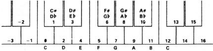
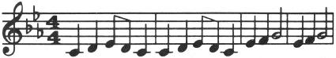
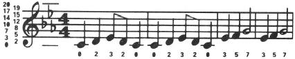

Manual de Basic Spectrum 48k. |
|
Capítulo 19
BEEPResumen
Si no ha descubierto todavía que el ZX Spectrum tiene un altavoz incorporado, lea el fascículo de introducción antes de proseguir. El altavoz se hace sonar con el empleo de la sentencia BEEP BEEP duración, tono
en donde, como es habitual, "duración" y "tono" representan cualquier expresión numérica. La duración se da en segundos y el tono se da en semitonos por encima del "do" central (C) - empleando números negativos para las notas por debajo del "do" central. Damos un diagrama para mostrar los valores del tono de todas las notas en una octava en el piano: 
C = do, D = re, E = mi, F = fa, G = sol, A = la, B = si
# = sostenido b = bemol Para conseguir notas más altas o más bajas, ha de sumar o restar 12 para cada octava que suba o baje. Si tiene un piano frente a usted cuando esté programando una armonía, este diagrama probablemente será todo lo que necesite para obtener los valores del tono. Si, sin embargo, está transcribiendo directamente de alguna música escrita, entonces, le sugerimos que dibuje un diagrama del pentagrama con el valor del tono escrito contra cada línea y espacio, teniendo en cuenta la tecla. Por ejemplo, teclee:
Cuando lo ejecute, debe obtener la marcha fúnebre de la primera sinfonía de Mahler, el fragmento en que los duendes entierran el hombre de la caballería de los Estados Unidos. Suponga, por ejemplo, que su composición está escrita en la clave de "do" en tono menor, como la sinfonía de Mahler anterior. La entrada es como se indica a continuación. 
y puede escribir los valores del tono de las notas como: 
Hemos puesto dos líneas suplementarias, sólo las necesarias. Observe cómo la nota "mi" baja en la armadura afecta no solamente a la nota "mi" en el espacio superior, bemolizándole de 16 a 15, sino también la nota "mi" en la línea inferior, bemolizándola de 4 a 3. Ahora debe ser bastante fácil encontrar el valor del tono de cualquier nota en el pentagrama. Si desea cambiar la clave de la pieza, lo mejor que puede hacerse es establecer una clave, clave, variable e insertar clave + antes de cada valor de tono; así, la segunda línea se hace: 20 BEEP 1, key + 0: BEEP 1, key + 2: BEEP .5, key + 3: BEEP .5, key + 2: BEEP 1, key + 0
Antes de que ejecute un programa debe dar a key el valor adecuado: O para "do" en tono menor, 2 para "re" en tono menor, 12 para "do" en tono menor una octava superior y así sucesivamente. Puede conseguir afinar el ordenador con otro instrumento ajustando key, empleando valores fraccionarios. También puede establecer las duraciones de todas las notas. Puesto que se trata de una pieza bastante lenta, hemos fijado un segundo para una negra y el resto se basan en ello, medio segundo para una corchea y así sucesivamente. Es más flexible establecer una variable, crochet, para almacenar la longitud de una negra y especificar las duraciones en función de ella. A continuación, la línea 20 se haría:
(probablemente deseará dar a crotchet y a key nombres más cortos). Dando a la negra crotchet, valores adecuados, fácilmente puede variar la velocidad de la pieza. Recuerde que puesto que hay solamente un altavoz en el ordenador, sólo puede tocar una nota a la vez, por lo que está restringido a composiciones no polifónicas. Si desea algo más debe cantar por su cuenta. Intente programar melodías por sí mismo, comenzando con una bastante sencilla como la de "Tres ratones ciegos". Si no tiene piano ni nunca ha escrito música, apodérese de un instrumento muy sencillo como un silbato o un caramillo y trate de componer melodías. Podría hacer un diagrama que muestre el valor del tono para cada nota que pueda tocar en este instrumento: Teclee: FOR n = 0 TO 1000: BEEP .5, n: NEXT n
Tocará notas tan altas como pueda y luego se interrumpirá con el mensaje de error B integer out of range. Puede imprimir n para averiguar cuán altas fueron las notas conseguidas. Pruebe lo mismo pero bajando las notas. Las notas muy bajas sonarán como chasquidos; de hecho, las notas más altas también están constituidas por chasquidos de la misma forma, pero más rápidos, por lo que el oído no puede distinguirlos. Solamente la gama media de notas son realmente buenas para la música; las notas bajas suenan demasiado como chasquidos y las notas altas son agudas y tienden a gorjear un poco. Introduzca por el teclado la línea de programa siguiente: 10 BEEP .5, 0: BEEP .5, 2: BEEP .5, 4: BEEP .5, 5: BEEP .5, 7: BEEP .7, 9: BEEP .5, 11: BEEP .5, 12: STOP
Con ella se toca la escala de "do" en tono mayor, que utiliza todas las notas "blancas" en el piano desde la nota "do" media a la siguiente nota "do" arriba. La forma en que esta escala se armoniza es exactamente la misma que en un piano y se denomina afinación plácida, porque el intervalo de altura de un semitono es el mismo a lo largo de toda la escala. Sin embargo, un violinista tocaría la escala de forma muy poco diferente, ajustando todas las notas para hacerlas sonar más agradable al oído. Puede hacerlo moviendo sus dedos muy ligeramente hacia arriba o hacia abajo en las cuerdas de una forma que un pianista no puede hacer. La escala natural, que es lo que toca el violinista, se obtiene con:
Quizá pueda, o no pueda, ser capaz de detectar cualquier diferencia entre estas dos; algunas personas sí pueden. La primera diferencia notable es que la tercera nota es algo más baja en la escala naturalmente afinada. Si usted es un perfeccionista real, podría desear programar sus armonías para utilizar esta escala natural en lugar de la plácida antes adoptada. La desventaja es que aunque actúa perfectamente en la clave de la nota "do", en otras no sucede lo mismo (todas ellas tienen sus propias escalas naturales) y en algunas, lo hace muy mal. La escala uniformemente temperada (plácida) está solamente algo desactivada y opera igualmente bien en todas las claves o tonos. Esto es menos problema en el ordenador, por supuesto, porque puede utilizar el artilugio de añadir una clave, key, variable. Alguna música, especialmente la música india, utiliza intervalos de altura inferior a un semitono. Puede programarlos en una sentencia BEEP sin ninguna dificultad; por ejemplo, el cuarto de tono por encima de la nota "do" media tiene un valor de altura acústica de 0,5. Puede hacer que el teclado suene como una bocina, en vez de con chasquidos, mediante: POKE 23609, 255
El segundo número determina la longitud del sonido de bocina (pruebe con diversos valores entre 0 y 255). Cuando es 0, el sonido es tan corto que parece un chasquido suave. Si está interesado por hacer más con el sonido del Spectrum, como oír el sonido que BEEP produce en algo distinto al altavoz interno, encontrará que la señal está presente en las conexiones del micrófono y del auricular. Estará a un nivel más alto en la de los auriculares, pero, de cualquier modo, son las mismas. Puede usar esta característica para conectar un auricular o un par de auriculares a su Spectrum. Con ello no se cortará el altavoz interno. Si está realmente ansioso de producir mucho ruido podría conectarle hasta un amplificador (la conexión "MIC" probablemente le proporcionará el nivel correcto) o podría registrar el sonido en una cinta y conseguir que el Spectrum lo toque conjuntamente. No deteriorará al Spectrum aunque cortocircuite las conexiones "MIC" o "EAR", por lo que debe experimentar para encontrar la mejor prestación para lo que quiera hacer. Ejercicio
|
Manual de Basic Spectrum 48k. |